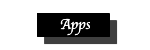

Tristan's Javascript
 |
 |
 |  |
|---|
This is my Javascripts that I created throughout CSC 106. The tools I learned through Khan Achademy and the quizzes in CSC 106 really helped me towards creating these Javascripts. Using these skills I learned, I was able to program this website. Below you can see the first three javascripts that I created in CSC 106. I created a bitmoji of myself just using shapes in Khan Achademy. Then I allowed my bitmoji to dance, and lastly allowed my bitmoji to race.